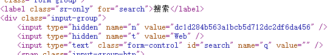

JavaScript 浏览器自动化
今天突然想到能不能利用 JavaScript（后面简称 “JS”） 来让本来重复性乏味的网页操作变得自动化。有一个网站有这样一项功能，注册登录的用户可以通过每天搜索50个关键词（关键词随意不能重复）来获得积分，一定积分即可获得相应的奖金。但每天手动输入50个词语再点击搜索按钮就显得很枯燥乏味，那么能否通过 JS 脚本来让其可以自动进行搜索呢？
随即我便开始了对网站的检查，经过查看每次搜素时执行的源码，我发现网站每次搜索都会从服务器端产生一个随机的 Token 令牌，并将其存放在本地 HTML 的一个hidden 域标签中。这个 Token 将会随下一次的搜索提交到服务器进行对比验证，如果令牌不一致将不会触发搜索。不过网站提交搜索请求时的 URL 链接并没有进行伪静态处理，所以不用抓包便可以简单获得提交时传入的参数，并且整个后端服务是用 PHP 语言进行编写的。

接下来需要对网站做进一步的检查，因为每一次搜索的内容都会出现在搜索结果页上，所以这里首先可以进行“反射型 XSS”漏洞的检查。但检测结果令人失望，所有提交后的数据使用了 htmlspecialchars 函数转义为 HTML 实体了。接下来再进行“SQL 注入”漏洞的检测，用 Safe3 进行检测，仍然没有发现任何结果。
利用漏洞的方式看了是不行了，接下来把目光从漏洞转移到“JS 跨域”，不过现在大多数的跨域方式都没有什么作用，iframe 跨域由于浏览器为了安全性的考虑，现在纯正的“JS 跨域”也已经基本无法使用。既然跨域也不行，那再把目光从外部执行的 JS 脚本转移到浏览器上。
因为整个网络的访问是基于 BS 模式的，浏览器作为客户端是完全可以模拟用户的行为的，所以从浏览器进行突破应该会有所收获。直接 F12 打开浏览器的调试模式。在 Console 控制台中尝试用 document 对象获得网页某一元素的值，没有任何问题。接着构造 XHR 对象，进行 AJAX 模拟提交数据请求，并打印返回的内容，发现网页是将整个 HTML 的内容返回过来，并不是单独返回 Token 的值，接下来一切顺利。因为目标网站加载了 JQuery 库，所以可以直接利用其封装好的 $.ajax 方法来发送和接受请求。将请求返回来的源代码进行过滤，过滤出 Token 值并用于下一次请求，然后编写一个包含递归调用 $.ajax 函数不断获取 Token 值的请求，最后的结果跟预想的一样，一切顺利。

此处的 setTimeout 因为需要传递参数所以写成了 setTimeout(function() { ... }, [time]) 的形式。测试的代码就不提供下载了，没有什么难度，只是整个优化或者说渗透过程的思路是要有条理并且具有针对性的。